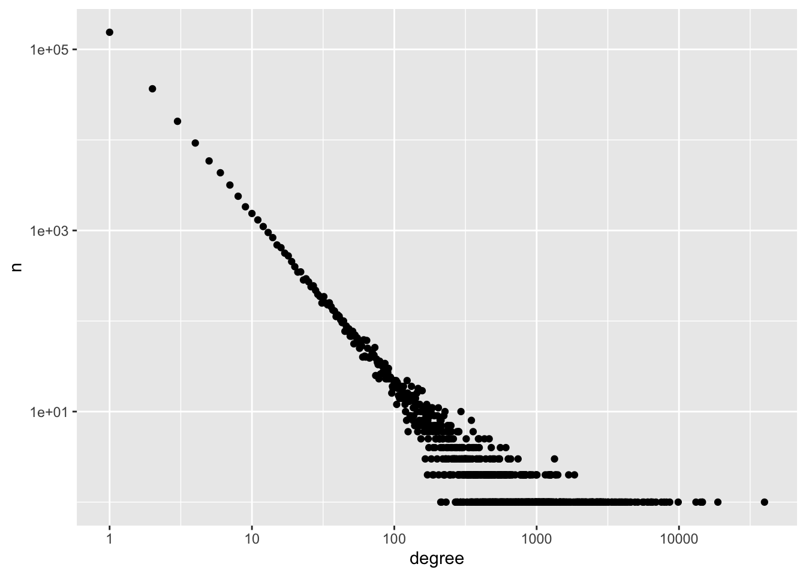
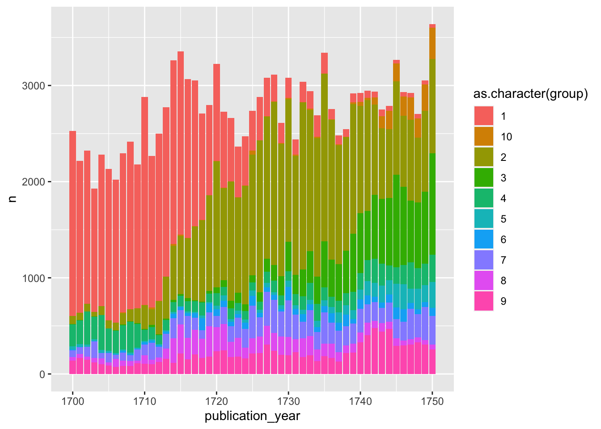
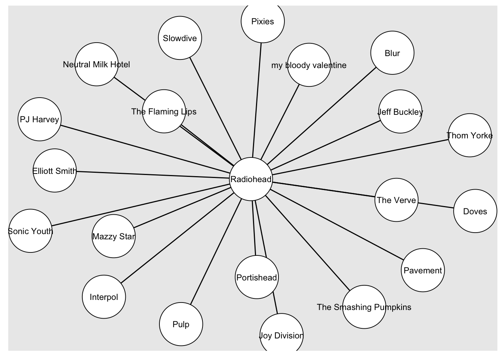
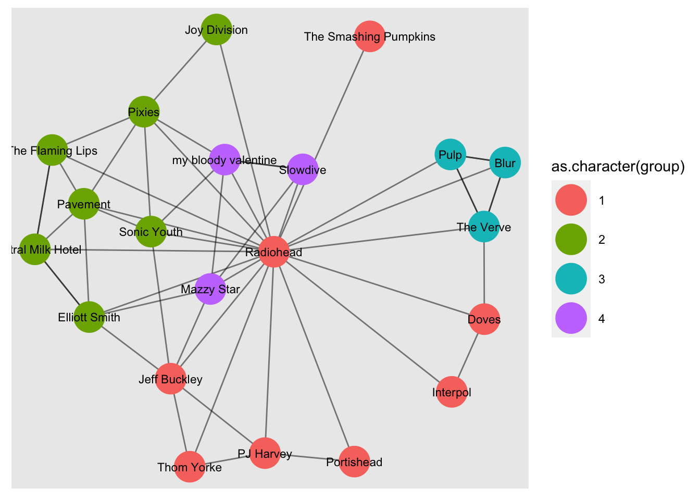

Week 6, Class 1: Asking and Answering Questions with Networks
Introduction
In this chapter, we’ll explore how you might go about using your new-found network analysis skills to actually tackle a humanities question. Producing a network diagram is not enough: you need to use these techniques as a tool. To come up with an interesting question, think about the reading we’ve been doing over the past weeks, and think about the kinds of questions networks are particularly adept at answering: questions to do with local vs. global, flows, structures, and groups.
The purpose of this chapter is to walk through two sample analyses, one with each of the course recommended datasets you worked with in weeks 2 and three. The aim is to demonstrate an example workflow which takes you from raw data to a particular analysis. Take note of the methods and the coding steps, which may be helpful when you come to do you final project. The first example creates a bipartite network from the ESTC data, and the second uses twitter data to look at the networks surrounding the campaign to repeal the ban on abortion in Ireland.
How to go about tackling humanities questions of networks?
Of course, how you do this depends very much on your question and dataset. However, the set of steps below are a good starting-point for developing a workflow which will allow you to understand and analyse humanities networks.
A good place to start is with an exploratory analysis. Calculate global network metrics, get the size, density, clustering coefficients. Try to interpret these, with your own data in mind. What does it mean for this particular network to be dense or sparse? What does the clustering mean?
With this information, decide whether its worth making an exploratory network visualisation. Spend some time picking out the most informative visualisation algorithm, and filter the data if needed. Interpret your visualisation, with a critical eye. As the reading in week 5, think about what the orientation, the clustering, and the centre and peripheries says about this network.
Armed with the information from your exploratory analysis, formulate a question or hypothesis for your network. Use existing work for inspiration if needed!
Run community detection algorithms. If you have additional node attributes from your data model, use these to summarise each group. Look for patterns amongst the nodes in each group.
‘Zoom in’, and look closely at the groups, nodes, and their data from a humanities perspective. Are there any unusual or stand-out nodes?
Use your additional node attributes and network measurements to test your hypothesis. Use statistics if you’re comfortable with it, but don’t be afraid to use more humanities-type methods such as close reading.
Write up your findings. Justify the choices you’ve made with your data and methods. Think about how you can communicate your relevant network metrics and a network diagram, if needed. Work on making your plots and diagrams readable.
Practical Example: ESTC
In this example, we’ll produce a large network from the English Short Title Catalogue and use it to tackle questions about eighteenth century publishing. The questions we are interested in:
What is the structure of the network of publishers in 18th century Britain?
What nodes form clusters, and what are these clusters made of?
Who are the most important ‘bridge’ publishers connected different groups?
For many of these questions, we would ideally know detailed information about the nodes, for example their places of birth, the types of books they published, and so forth. Because we don’t have much information on most of these publishers, we will infer it, for example by counting the books attached to their records.
Making the dataset
First, download and make a network of the ESTC. We have restricted it to 1700:1750, and have already made a dataset containing the relevant books.
The first step is to turn this into a bipartite, projected network, following the steps in the previous lesson. This will result in a network of publishers connected by shared co-occurrences on book title pages.
Make the publisher->book network, using the techniques from previous chapters.
library(tidyverse)
library(tidygraph)
library(igraph)
library(ggraph)
estc_actor_links = read_csv('actor_links.csv')## Rows: 147140 Columns: 2
## ── Column specification ────────────────────────────────────────────────────────
## Delimiter: ","
## chr (2): estc_id, actor_id
##
## ℹ Use `spec()` to retrieve the full column specification for this data.
## ℹ Specify the column types or set `show_col_types = FALSE` to quiet this message.book_info = read_csv('book_info.csv')## Rows: 84808 Columns: 6
## ── Column specification ────────────────────────────────────────────────────────
## Delimiter: ","
## chr (5): estc_id, short_title, publication_place, author_id, author_name_pri...
## dbl (1): publication_year
##
## ℹ Use `spec()` to retrieve the full column specification for this data.
## ℹ Specify the column types or set `show_col_types = FALSE` to quiet this message.publisher_graph = estc_actor_links %>% distinct(estc_id, actor_id) %>%
graph_from_data_frame(directed = FALSE) %>% as_tbl_graph()Add a type attribute to the nodes, based on whether they are in the first or second column, using bipartite mapping. Project it to publisher->publisher with bipartite.projection.
V(publisher_graph)$type <- bipartite_mapping(publisher_graph)$typeg = bipartite.projection(publisher_graph, which = TRUE)Get global network metrics
In any analysis, a useful first step is to calculate some basic network metrics, so we know how dense it is, to what extent it is clustered, and so forth. Use the commands from the previous lesson to calculate network size (in nodes and edges), density, transitivity (clustering), and average path length:
edge_size = gsize(g)
node_size = gorder(g)
density = igraph::graph.density(g)
global_clustering = igraph::transitivity(g, type = 'global')
average_local_cluster = igraph::transitivity(g, type = 'localaverage')
average_path = igraph::average.path.length(g)To view this, we can turn these numbers into a single dataframe:
tibble(edge_size, node_size, density, global_clustering, average_local_cluster, average_path) ## # A tibble: 1 × 6
## edge_size node_size density global_clustering average_local_cluster average…¹
## <dbl> <int> <dbl> <dbl> <dbl> <dbl>
## 1 50383 10621 0.000893 0.225 0.731 4.80
## # … with abbreviated variable name ¹average_pathOf course, interpreting the numbers here is not straightforward, because it depends on the particular network and its size. However, we could say that this is actually quite a dense network - there are five times as many edges as there are nodes, and it has a high amount of clustering. So, we might surmise that this network is formed of tightly-connected groups.
Calculate node-level statistics
Next, we’ll calculate some node-level statistics, including centrality measurements and community membership. Turn this projection into a tbl_graph, and then use mutate() plus the commands to calculate the various information on the nodes. We also calculate community membership using a community detection algorithm, with group_louvain().
tbl_g = g %>% as_tbl_graph() %>%
mutate(degree = centrality_degree(weights = NULL, mode = 'all'))%>%
mutate(between = centrality_betweenness(weights = NULL)) %>%
mutate(group = group_louvain(weights = NULL))## Warning in betweenness(graph = graph, v = V(graph), directed = directed, :
## 'nobigint' is deprecated since igraph 1.3 and will be removed in igraph 1.4Again, we can use this information to get some aggregated statistics. One interesting one to look at is degree distribution. We can make a histogram of the degree scores for each node:
tbl_g %>% as_tibble() %>%
ggplot() +
geom_histogram(aes(degree), binwidth = 10)
This shows that the vast majority of nodes have a degree between 0 and 10, then far fewer between 10 and 20, and so forth. A very small number of nodes (probably 1) has a degree score of around 600.
Look at individual groups
Next we want to understand something about the groups which make up this network. We know they cluster together, but do they cluster together based on location? Or time period? Or something else?
Again, we can look at how many nodes there are in total in the groups:
tbl_g %>% as_tibble() %>% ggplot() + geom_histogram(aes(group), binwidth = 10)As with the degree distribution, a very small number of the groups contain nearly all the nodes. The first 10 or so groups are large, then there are a large number of very small groups. Many of these are probably disconnected components, cut off from the wider data. We can concentrate our analysis on the first 10 groups using filter().
We can use the tidyverse to create a summary dataset of the groups, attached to some additional information. First, we need to get all the publication places and years for all actors in the dataset. Then, we’ll join this information to the groups we have, and count how many of each occurrences we have.
publication_places = estc_actor_links %>%
select(actor_id, estc_id) %>%
left_join(book_info %>%
select(estc_id, publication_place)) %>%
count(actor_id, publication_place) ## Joining, by = "estc_id"publication_years = estc_actor_links %>%
select(actor_id, estc_id) %>%
left_join(book_info %>%
select(estc_id, publication_year)) %>%
count(actor_id, estc_id, publication_year) ## Joining, by = "estc_id"Next, use group_by() and summarise() to make a dataset counting the places of publication for each group. As we can see, there are two large London groups, a Scottish group, an Irish group, an American group, and a number of smaller mixed ones. So we can say quite comprehensively that the network clusters together based on geographic proximity.
tbl_g %>% filter(group %in% 1:10) %>%
as_tibble() %>%
left_join(publication_places, by = c('name' = 'actor_id')) %>%
count(group, publication_place, wt = n) %>%
arrange(desc(n)) %>%
mutate(tot = paste0(publication_place, " (", n, ")")) %>%
group_by(group) %>% summarise(tots = paste0(tot, collapse = '; ')) %>%
DT::datatable()%>%
DT::formatStyle(columns = 1:3, fontSize = '70%')In a further step, we can add the year of publication for all works by all nodes, to see if there are patterns there too:
tbl_g %>%
as_tibble() %>%
left_join(publication_years, by = c('name' = 'actor_id')) %>%
count(group, publication_year, wt = n) %>%
filter(group %in% 1:10) %>%
ggplot() + geom_col(aes(x = publication_year, y = n, fill = as.character(group)))We see that the separate London groups do seem to be clustered along temporal lines.
To visualise this and quickly communicate it, we could add an additional table of data to the nodes, indicating the percentage of their output which was published in Edinburgh. If we then draw a network diagram, we can colour the nodes based on this metric. If high-percentage Edinburgh nodes are clustered together, this would be another indication of the degree to which this group of publishers was separate.
First, make this new dataset:
percent_edinburgh = book_info %>% left_join(estc_actor_links, by = 'estc_id')%>%
group_by(actor_id, publication_place) %>%
summarise(n = n()) %>%
mutate(freq = n / sum(n)) %>%
filter(publication_place %in% 'Edinburgh')## `summarise()` has grouped output by 'actor_id'. You can override using the
## `.groups` argument.Next, draw the network,
tbl_g %>%
left_join(percent_edinburgh, by = c('name' = 'actor_id')) %>%
mutate(comp = group_components()) %>%
mutate(freq = replace_na(freq, 0)) %>%
filter(comp %in% 1:5) %>%
filter(group %in% 1:10) %>% activate(edges) %>%
filter(weight>5) %>%
activate(nodes) %>%
mutate(degree = centrality_degree(weights = weight)) %>%
filter(degree>0) %>%
ggraph('fr') +
geom_edge_link(alpha = .1) +
geom_node_point(aes(color = freq), alpha = .5) +
scale_color_viridis_c()
Practical example: Twitter (and dealing with big data)
The next section is an example of the kinds of questions we might ask using the Twitter data. We’ll take a look at the networks of tweets and retweets surrounding the conversation about the [campaign to remove Ireland’s ban on abortion(https://en.wikipedia.org/wiki/Thirty-sixth_Amendment_of_the_Constitution_of_Ireland). The campaign consisted of the ‘yes’ side, who campaigned for people to vote ‘yes’ to repealing the existing article of the consitution, which essentially made abortion illegal, and the ‘no’ side, who wished to maintain the status quo. The same steps could be followed with any subset of data downloaded and hydrated using the Tweetsets, as we explored in weeks 2 and 3.
Download data
The first thing I did was to download the relevant data, following the steps in our earlier lesson. I downloaded the full dataset of 2,276,808 tweets, then used the tool to ‘hydrate’ them, which took approximately a day (worth bearing in mind if you’re using Twitter data for your final project). These hydrated tweets were saved in a .csv file called repeal_tweets.csv.
repeal_tweets = data.table::fread('../../Downloads/repeal_tweets.csv')
str(repeal_tweets)## Classes 'data.table' and 'data.frame': 1367666 obs. of 35 variables:
## $ coordinates : chr "" "" "" "" ...
## $ created_at : chr "Sat May 19 22:32:42 +0000 2018" "Sat May 19 22:33:28 +0000 2018" "Fri May 25 09:33:40 +0000 2018" "Sat May 19 22:32:43 +0000 2018" ...
## $ hashtags : chr "LoveBothVoteNo 8thref" "" "repealthe8th" "together4Yes RepealThe8th" ...
## $ media : chr "https://twitter.com/loveboth8/status/997876898578550790/photo/1" "" "" "https://twitter.com/phlaimeaux/status/997917600343568384/video/1" ...
## $ urls : chr "" "" "https://twitter.com/oliviao_neill/status/999416027858505728" "" ...
## $ favorite_count : int 0 0 34 0 0 0 0 0 0 0 ...
## $ id :integer64 997968315049005056 997968507257151489 999946594870005760 997968319142682624 997968588807032832 995076037695324160 997968273416294401 1000342780827365377 ...
## $ in_reply_to_screen_name : chr "" "" "" "" ...
## $ in_reply_to_status_id :integer64 NA NA NA NA NA NA NA NA ...
## $ in_reply_to_user_id :integer64 NA NA NA NA NA NA NA NA ...
## $ lang : chr "qme" "en" "en" "en" ...
## $ place : chr "" "" "" "" ...
## $ possibly_sensitive : logi FALSE NA FALSE FALSE FALSE NA ...
## $ quote_id :integer64 NA NA NA NA NA NA NA NA ...
## $ retweet_count : int 4 6 9 681 5 102 271 63 0 5 ...
## $ retweet_id :integer64 997876898578550790 997865462531698688 NA 997917600343568384 997850111223853056 995028735102541825 997930648382902272 1000294993360076800 ...
## $ retweet_screen_name : chr "lovebothireland" "lovebothireland" "" "phlaimeaux" ...
## $ source : chr "<a href=\"\"http://twitter.com\"\" rel=\"\"nofollow\"\">Twitter Web Client</a>" "<a href=\"\"http://twitter.com\"\" rel=\"\"nofollow\"\">Twitter Web Client</a>" "<a href=\"\"http://twitter.com/#!/download/ipad\"\" rel=\"\"nofollow\"\">Twitter for iPad</a>" "<a href=\"\"https://mobile.twitter.com\"\" rel=\"\"nofollow\"\">Twitter Web App</a>" ...
## $ text : chr "#LoveBothVoteNo #8thref https://t.co/xc4jslD0nm" "Have you heard this? “Abortion is happening anyway”. Then you should read this: \"\"2-3 weeks pregnant. I freak"| __truncated__ "Ireland, beautiful warm friendly funny lyrical welcoming Ireland, stop doing this to your sisters, daughters, m"| __truncated__ "my first and I promise only ever vlog #together4Yes #RepealThe8th https://t.co/fvqWEDg6iV" ...
## $ tweet_url : chr "https://twitter.com/corkmankeane/status/997968315049005056" "https://twitter.com/corkmankeane/status/997968507257151489" "https://twitter.com/barneyfarmer/status/999946594870005760" "https://twitter.com/cacenlleuad/status/997968319142682624" ...
## $ user_created_at : chr "Mon Apr 30 07:24:29 +0000 2012" "Mon Apr 30 07:24:29 +0000 2012" "Fri Jan 07 14:52:54 +0000 2011" "Fri Nov 06 20:51:08 +0000 2015" ...
## $ user_id :integer64 567006745 567006745 235172191 4149894277 567006745 45134244 254184569 104557818 ...
## $ user_default_profile_image: logi FALSE FALSE FALSE FALSE FALSE FALSE ...
## $ user_description : chr "Prolife\nHusband and Dad" "Prolife\nHusband and Dad" "Yūgen appreciation society. Writes Drunken bakers etc for Viz. Wrote this https://t.co/EkFvmRP7kD this https://"| __truncated__ "Ebychiadau achlysurol, di-flewyn-ar-dafod, gan Gymraes yn yr Alban." ...
## $ user_favourites_count : int 44701 44701 177490 6814 44701 5518 6605 49400 3175 628 ...
## $ user_followers_count : int 680 680 27325 292 680 329 184 1546 528 832 ...
## $ user_friends_count : int 1287 1287 14899 1222 1287 1393 558 1741 983 969 ...
## $ user_listed_count : int 20 20 143 3 20 2 1 28 16 42 ...
## $ user_location : chr "Ireland" "Ireland" "" "Edinburgh, Scotland" ...
## $ user_name : chr "Joseph Keane" "Joseph Keane" "barney farmer" "cacenlleuad" ...
## $ user_screen_name : chr "corkmankeane" "corkmankeane" "barneyfarmer" "cacenlleuad" ...
## $ user_statuses_count : int 48207 48207 133078 1089 48207 5544 3298 9249 1738 40441 ...
## $ user_time_zone : logi NA NA NA NA NA NA ...
## $ user_urls : chr "" "" "http://barneyfarmer.com" "" ...
## $ user_verified : logi FALSE FALSE FALSE FALSE FALSE FALSE ...
## - attr(*, ".internal.selfref")=<externalptr>This data doesn’t include detailed follower information, but it does include replies and retweets. Either of these could be represented as a network. I’m going to use the retweets.
The aim is to get an edge list containing the user ID of the retweeter, and the user ID of the author of the original tweet. This can be used to create a directed network. The relevant columns are user_screen_name and retweet_screen_name. Use dplyr functions to count these, then turn it into a network object with as_tbl_graph():
retweet_graph = repeal_tweets %>%
filter(! retweet_screen_name=='') %>%
count(user_screen_name, retweet_screen_name, name = 'weight') %>%
as_tbl_graph()
retweet_graph## # A tbl_graph: 252296 nodes and 743767 edges
## #
## # A directed multigraph with 3055 components
## #
## # Node Data: 252,296 × 1 (active)
## name
## <chr>
## 1 _________rb_
## 2 ________simon
## 3 _______2_s__
## 4 _____botong
## 5 _____Brad______
## 6 _____Gem
## # … with 252,290 more rows
## #
## # Edge Data: 743,767 × 3
## from to weight
## <int> <int> <int>
## 1 1 109062 1
## 2 2 82664 1
## 3 2 82669 1
## # … with 743,764 more rowsExtend the data model by creating a
We will also make a basic table of node information, containing the user friends and follower numbers for each account. This plus the network will consist of our data model.
For each tweet in the dataset, there is a count of that person’s friends (those they are following) and followers. We will take the maximum of these two values, plus the date the user was created, and make it into a new dataset.
user_info = repeal_tweets %>%
group_by(user_screen_name) %>%
summarise(max_friends = max(user_friends_count),
max_followers = max(user_followers_count),
date_created = min(user_created_at))At a later stage, this can be joined to the network using the user_screen_name key.
Basic network statistics
The result is a very large graph (250,000 nodes, 750,000 edges), which means it’s not very feasible to visualise it, for example. To get an idea of the ‘shape’ of this network, it’s better to use basic global network metrics.
To do this, we use the functions described in chapter 4, class 2:
Density
(the number of links present out of all possible links):
retweet_graph %>% igraph::graph.density()## [1] 1.168471e-05Average path length
(the average number of hops between every pair of nodes in the network). This can take a long time with a large network, because it has to calculate every possible path between every pair of nodes.
#retweet_graph %>% igraph::average.path.length()Clustering coefficient:
Because there are a number of ways to calculate clustering in a network, a method needs to be specified. The clustering coefficient is also known as transitivity, and it is defined as the ratio of completed triangles and connected triples in the graph. This measurement can be global (which counts the overall ratio) or local (which counts the individual ratio for each node). Because we want the global measurement, specific this with the type = argument.
retweet_graph %>% igraph::transitivity(type = 'global')## [1] 0.01054959How many of the edges are reciprocated.
retweet_graph %>% igraph::reciprocity()## [1] 0.02561819Another measurement we can calculate is the degree distribution. A diagonal descending line means that the degree distribution follows a power law, as described by Barabasi:
retweet_graph %>% mutate(degree = centrality_degree(weights = weight, mode = 'all')) %>%
as_tibble() %>% count(degree) %>% ggplot() + geom_point(aes(degree, n)) + scale_x_log10() + scale_y_log10()
From these basic measurements we can say that the graph is large (3/4 of a million edges), it is not dense, and only a small proportion of its links are reciprocated. We also know that a very small number of users have the vast majority of links. This is a clue that the influence in this network is, like many networks, concentrated in a small number of individual twitter users.
Node-level metrics
The next step is to calculate some ‘node-level’ metrics, again, using commands we learned in week 4. These node-level metrics will allow us to look at the individual twitter users in this network and understand their importance or ‘centrality’.
First, we calculate in-degree and out-degree separately. In this particular network, a high in-degree means that a person was retweeted a lot, and out-degree means that a person was a prolific retweeter. We’ll create a new version of the graph, called df, which contains these scores. We’ll add the information on friends and followers too.
df = retweet_graph%>%
mutate(indegree = centrality_degree(mode = 'in', weights = weight)) %>%
mutate(outdegree = centrality_degree(mode = 'out', weights = weight)) %>%
left_join(user_info, by = c('name' = 'user_screen_name'))First, we take a look at the highest in-degree users (those with the highest number of retweets).
These are a mix of official campaign accounts, for both yes and no sides (Together4yes, SaveLivesAlways, lovebothireland), public figures (the then Taoiseach, or Prime Minister of Ireland, Leo Varadkar, the director of Amnesty International and human rights campaigner Colm O Gorman), a number of authors. There are also a few accounts with low numbers of followers. We can check to see if they went ‘viral’ with a single tweet, or whether they had consistent retweeting.
df %>% arrange(desc(indegree)) %>% as_tibble() %>% head(10)## # A tibble: 10 × 6
## name indegree outdegree max_friends max_followers date_created
## <chr> <dbl> <dbl> <int> <int> <chr>
## 1 Together4yes 39087 782 823 24458 Fri Feb 02 10:4…
## 2 SaveLivesAlways 18353 401 546 4202 Wed Jun 07 22:1…
## 3 lovebothireland 14366 241 732 4634 Thu Oct 06 13:5…
## 4 MorabitoCM 14184 0 1227 1026 Thu Jul 16 06:4…
## 5 Colmogorman 13454 1104 912 59411 Sat Apr 18 12:0…
## 6 LeoVaradkar 13138 16 1785 451116 Wed Dec 22 13:3…
## 7 louiseckenny 9556 314 1941 13975 Sat Aug 01 21:3…
## 8 becksk 8563 41 1774 1078 Mon May 18 23:5…
## 9 john_mcguirk 7759 106 2470 24676 Thu Mar 12 13:5…
## 10 markohalloran 7046 1113 3535 18512 Tue Apr 21 23:2…First use pull() to get a vector of the top ten accounts. Next, only include retweets by them. Then use ggplot to look at the distribution of those tweets - whether they were concentrated or dispersed.
top_in_degree = df %>%
arrange(desc(indegree)) %>%
as_tibble() %>%
head(10) %>%
pull(name)repeal_tweets %>%
filter(retweet_screen_name %in% top_in_degree) %>%
ggplot() +
geom_histogram(aes(retweet_count), binwidth = 1000) +
facet_wrap(~retweet_screen_name)
This shows that many of these accounts were retweeted consistently, but that some (becksk and MorabitoCM) had a single viral tweet, accounting for their high in-degree.
df %>% arrange(desc(outdegree)) %>% as_tibble() %>%
left_join(user_info, by = c('name' = 'user_screen_name'))## # A tibble: 252,296 × 9
## name indeg…¹ outde…² max_f…³ max_f…⁴ date_…⁵ max_f…⁶ max_f…⁷ date_…⁸
## <chr> <dbl> <dbl> <int> <int> <chr> <int> <int> <chr>
## 1 kaydnan 0 7524 173 136 Wed Ma… 173 136 Wed Ma…
## 2 Irishprolifer 1631 4707 7930 7087 Wed No… 7930 7087 Wed No…
## 3 mobyrne100 1100 3809 2498 1050 Sat Ju… 2498 1050 Sat Ju…
## 4 MaryOGrady8 6 3785 183 863 Wed Ja… 183 863 Wed Ja…
## 5 christi85573… 54 3125 5003 2432 Tue Ju… 5003 2432 Tue Ju…
## 6 Declan1497 3 3042 2390 1110 Sun Ma… 2390 1110 Sun Ma…
## 7 DunL4Choice 943 2921 911 1434 Sat Se… 911 1434 Sat Se…
## 8 BernadetteCo… 4 2641 231 189 Sun Fe… 231 189 Sun Fe…
## 9 EmmaMurphy12… 3607 2439 3932 3149 Fri Au… 3932 3149 Fri Au…
## 10 Paul71 1843 2066 3894 1566 Thu Ma… 3894 1566 Thu Ma…
## # … with 252,286 more rows, and abbreviated variable names ¹indegree,
## # ²outdegree, ³max_friends.x, ⁴max_followers.x, ⁵date_created.x,
## # ⁶max_friends.y, ⁷max_followers.y, ⁸date_created.yPageRank
However, these numbers simply tell us how many times a given node retweeted, and nothing about their influence in the network. For example, the top user by outdegree is not retweeted by others at all, which means they were very active, but their reach was limited: they were not having their own tweets broadcast by others.
Another way to calculate the influence of a user in this network is to look at their PageRank score. This is a recursive metric, which scores a node highly if they are retweeted by other importance nodes. It is particularly appropriate here, because it means that the ‘value’ of a node’s tweets is weighted by how often its retweeters are themselves retweeted.
pr_scores = retweet_graph %>%
mutate(page = centrality_pagerank(weights = weight)) %>%
mutate(degree = centrality_degree(mode = 'in', weights = weight)) %>%
as_tibble()
pr_scores %>% arrange(desc(page)) %>% head(10)## # A tibble: 10 × 3
## name page degree
## <chr> <dbl> <dbl>
## 1 Together4yes 0.0300 39087
## 2 LeoVaradkar 0.00971 13138
## 3 newschambers 0.00886 6868
## 4 Colmogorman 0.00854 13454
## 5 MorabitoCM 0.00844 14184
## 6 gavreilly 0.00770 5551
## 7 SaveLivesAlways 0.00706 18353
## 8 shannonmaile_ 0.00672 1531
## 9 becksk 0.00638 8563
## 10 louiseckenny 0.00492 9556This list looks very similar to the list of those with the highest in-degree, but there are some differences if we compare the two. The accounts newschambers, gavoreilly, and shannonmaile_ are new to the top ten.
We can also plot the relationship between PageRank and in-degree, to get an idea of just how closely related these two measurements are.
To make it easier to read, we use a log scale with scale_x_log10() and scale_y_log10(). This is useful when your data has a skewed distribution like this.
pr_scores %>%
arrange(desc(page)) %>%
ggplot(aes(text =name)) +
geom_point(aes(page, degree),alpha = .5) + scale_x_log10() + scale_y_log10()## Warning: Transformation introduced infinite values in continuous y-axis
We can easily turn this into an interactive graph using another R library, Plotly. This can be very useful for this kind of exploratory data analysis, as it allows you to quickly zoom in on individual points. For this, we make new version of the data, only looking at the top 1000-ranked for PageRank.
p = pr_scores %>% slice_max(page, n = 1000) %>%
arrange(desc(page)) %>%
ggplot(aes(text =name)) +
geom_point(aes(page, degree),alpha = .5) + scale_x_log10() + scale_y_log10()
plotly::ggplotly(p)Of particular interest are points (nodes) in the bottom-left of the graph, which have high PageRank despite not having the highest in-degree overall. Several of these are journalists or news sites, for example the RTE news anchor Dyayne Connor, and the ‘morningireland’ account.
Some other questions you might ask of this data?
Which are being consistently retweeted, and which just have one ‘big’ tweet which goes viral?
Is there a difference between the ‘yes’ and ‘no’ camps in terms of the way they are retweeted etc?
Are there any genuinely ‘in the middle’?
Community Detection
The power of networks, as we’ve said, is that we can consider groups as well as individuals and individual counts of tweets or importance. We can do this with community detection, to look at whether there are distinct groups within this network. We’ll make a new version of the network, this time undirected, because the most widely-used community detection algorithm only works with undirected networks. Then we’ll calculate the group membership using group_louvain().
retweet_graph_u = repeal_tweets %>%
filter(! retweet_screen_name=='') %>%
count(user_screen_name, retweet_screen_name, name = 'weight') %>%
as_tbl_graph(directed = FALSE) %>% mutate(comp = group_components()) %>% filter(comp ==1) %>%
mutate(group = group_louvain()) If we do this, we see that there are a large number of groups, over 3000, but that many of them are just a few nodes. We can remove these ‘disconnected components’ first, to make things easier to work with. Now there are about 400 groups, the largest being 30,000 nodes.
retweet_graph_u %>% as_tibble() %>% count(group) %>% ggplot() + geom_col(aes(x = group, y = n))
Adding other analysis: text mining
In order to understand this data, we can use text mining techniques on the tweets or hashtags, which should give a clue as to the makeup of each of the groups. We’ll concentrate on the ten largest groups.
df_t = retweet_graph_u %>% as_tibble() %>% left_join(repeal_tweets, by = c('name' = 'user_screen_name'))hashtags = df_t %>% select(group, hashtags) %>% tidytext::unnest_tokens(output = token, input = hashtags)
hashtags_tf = hashtags %>% count(group, token) %>% tidytext::bind_tf_idf(token, group, n)
hashtags_tf_top = hashtags_tf %>% group_by(group) %>% slice_max(tf, n = 50) %>% filter(group %in% 1:30)hashtags_tf_top %>%
mutate(h = paste0(token, " (", n, ")")) %>%
group_by(group) %>% summarise(hashtags = paste0(h, collapse = '; ')) %>%
DT::datatable() %>%
DT::formatStyle(columns = 1:3, fontSize = '70%')Listing the top hashtags for each group shows that most groups seem to include mostly pro ‘yes’ campaign hashtags, except one, group 4, which is mostly ‘no’ campaign. Unsurprisingly for such a divisive issue, the groups are divided along ideological lines.
Exporting the edge list for Gephi.
The network is too large to visualise in R. We can create an edge list and use it in another software, Gephi, which is better suited for visualising very large networks:
repeal_tweets %>%
filter(! retweet_screen_name=='') %>%
count(user_screen_name, retweet_screen_name, name = 'Weight') %>%
select(Source = user_screen_name, Target = retweet_screen_name) %>% write_csv('repeal_for_gephi.csv')